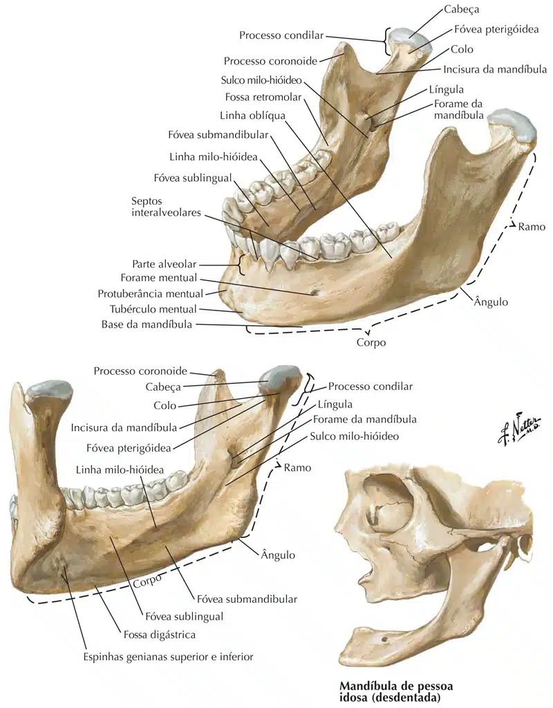
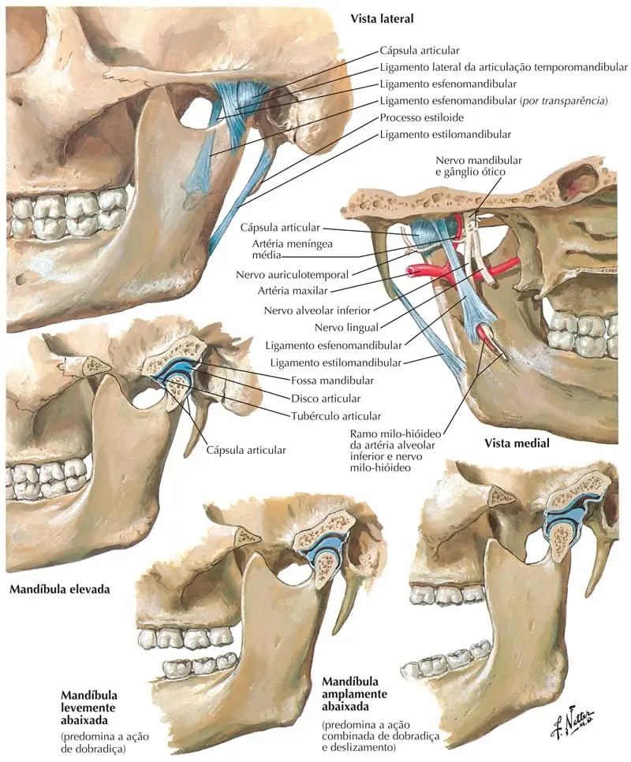
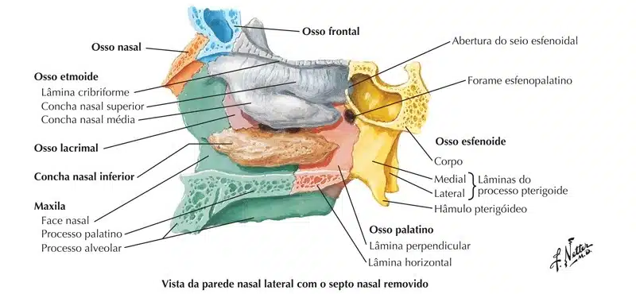

São dois ossos que, nas extremidades frontais (na linha média), articulam-se entre si em sínfise (fixa) e, nas restantes superfícies recebem os ossos nasais, palatino, etmóide, frontal e, nas regiões laterais, com os zigomáticos (as “maçãs do rosto”).
Cada maxila contém, da parte mediana à posterior, onze alvéolos para a inserção dos dentes, respectivamente:
Três alvéolos, que aumentam de tamanho do primeiro para o terceiro, para o engaste dos incisivos;
Nos vertebrados, a mandíbula é o componente móvel (se movimenta nos três planos: sagital, frontal e transversal) do crânio que forma a parte inferior da cabeça.
Sua forma é semelhante a uma ferradura horizontal com abertura posterior (corpo), de cujas extremidades livres saem dois prolongamentos (ramos).
Na parte posterior, há uma articulação sinovial, com os ossos temporais através do processo condilar, alongado ortogonalmente ao plano medial; esta articulação designa-se Articulação Temporomandibular (ATM).
Os principais acidentes anatômicos encontrados são:
Processo condilar;
Incisura da mandíbula;
Processo coronóide;
Ramo;
Ângulo;
Corpo;
E processo mental ou mentual.

NETTER: Frank H. Netter Atlas De Anatomia Humana. 7 ed. Rio de Janeiro, Elsevier, 2018.

NETTER: Frank H. Netter Atlas De Anatomia Humana. 7 ed. Rio de Janeiro, Elsevier, 2018.
Zigomáticos
São achatados, de forma quadrangular, apresentando 2 faces, 4 bordos e 4 ângulos.
Se articulam com a maxila, osso temporal, a grande asa do osso esfenóide e o osso frontal.
Formam parte da órbita e geralmente é referido como o osso da bochecha, maçã do rosto ou osso malar.
Estão situados acima e lateralmente na face: formam a proeminência da bochecha, parte da parede lateral e assoalho da órbita, e partes das fossas temporal e infra temporal.
Os principais acidentes anatômicos encontrados são:
Estão situados na porção anterior da parede medial da órbita.
Têm duas superfícies e quatro bordas.
Os ossos lacrimais ou únguis são ossificados a partir de um único centro, que aparece por volta da décima segunda semana a partir da membrana que cobre a cápsula cartilaginosa nasal.
As conchas nasais inferiores ou cornetos inferiores se estendem horizontalmente ao longo da parede lateral da cavidade nasal e consistem de uma lâmina de osso esponjoso, curvada em si mesma.
Cada concha nasal inferior é considerada um par de ossos faciais já que elas surgem dos ossos maxilares e se projetam horizontalmente dentro da cavidade nasal.
Na passagem do ar, ele é aquecido, umedecido e limpado.
Superior à concha nasal inferior estão as conchas nasais média e superior.

NETTER: Frank H. Netter Atlas De Anatomia Humana. 7 ed. Rio de Janeiro, Elsevier, 2018.
Vômer
É um dos ossos ímpares do crânio.
Ele está situado na linha sagital mediana, e se relaciona com: